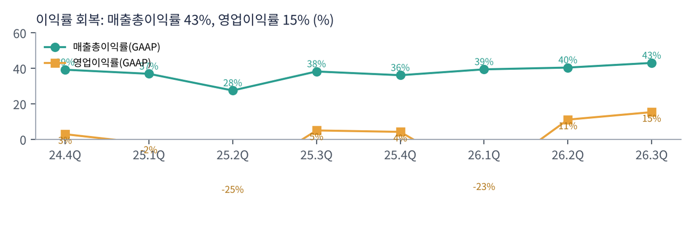

인텔은 PC와 서버용 x86 CPU를 만드는 세계 최대 회사이자, 칩을 직접 생산하는 몇 안 되는 종합 반도체 회사(IDM)다. 2024년까지 공정 경쟁에서 TSMC에 밀리고 대규모 적자를 내며 위기를 겪었다. 2025년 립부 탄 CEO 취임 뒤 인력을 약 31% 줄이고(10.9만 → 7.5만 명 목표) 미국 정부·엔비디아 등의 투자를 받아 재건 중이다.
| 항목 | 내용 |
|---|---|
| 종목 | Intel Corporation (INTC) · 반도체 · 1968년 설립 · 본사 캘리포니아주 산타클라라 |
| 경영진 | 립부 탄 CEO / 데이비드 진스너 CFO |
| 시가총액 | 약 $299B (11/6 종가 기준) |
| 최근 분기(3Q26) | 매출 $16.5B(+21%), 순이익 $3.3B, EPS $0.60, 비GAAP EPS $0.52 |
| 주요 주주 | 미국 상무부 약 9.9%(진입가 약 $20.47의 에스크로 주식). 주가가 오르면 이 의무의 평가손실이 커지는 구조 |
| 내부자 매수 | 탄 CEO가 11/4 15만 주를 평균 $64.73에 매수(트레이딩뷰 보도) |
| 분기 | 매출 | 매출총이익률 | 영업이익률 | 순이익 | 클라이언트 | DCAI | 특이 사항 |
|---|---|---|---|---|---|---|---|
| 2024.4Q | $14.3B | 39.2% | 2.9% | -$0.1B | $8.8B | $4.3B | |
| 2025.1Q | $12.7B | 36.9% | -2.4% | -$0.8B | $7.6B | $4.2B | 탄 CEO 취임 |
| 2025.2Q | $12.9B | 27.5% | -24.7% | -$2.9B | $7.9B | $4.0B | 구조조정 비용 |
| 2025.3Q | $13.7B | 38.2% | 5.0% | $4.1B | $8.5B | $4.1B | 지분 매각 이익 포함 |
| 2025.4Q | $13.7B | 36.1% | 4.2% | -$0.6B | $8.2B | $4.7B | |
| 2026.1Q | $13.6B | 39.4% | -23.1% | -$3.7B | $7.7B | $5.1B | 비GAAP 순이익 $1.5B |
| 2026.2Q | $16.1B | 40.4% | 11.1% | -$11.0B | $8.9B | $6.3B | 정부 지분 평가손실 $12.5B |
| 2026.3Q | $16.5B | 43.0% | 15.3% | $3.3B | $8.1B | $7.3B | DCAI 15년 최고 성장 |

매출이 2년 만에 다시 늘기 시작했다. 2024년 4분기 ~ 2026년 1분기 내내 $13~14B에 머물던 매출이 2분기 $16.1B(+25%), 3분기 $16.5B(+21%)로 뛰었다. 늘어난 $3B의 대부분이 DCAI다. AI 에이전트 시대에 GPU 옆에서 일하는 서버 CPU 수요가 폭증하면서, 그동안 AMD에 점유율을 내주던 제온이 공급이 모자랄 만큼 팔렸다.
GAAP 순이익은 거의 의미가 없다. 2026년 2분기 순손실 $11.0B는 미국 정부에 넘길 에스크로 주식의 시가 평가손실 $12.5B(비현금) 때문이다. 인텔 주가가 오르면 손실이 커지고, 주가가 떨어지면 이익이 생긴다. 3분기 순이익 $3.3B가 비GAAP($2.8B)보다 큰 것도 주가 하락에 따른 평가이익이 섞였기 때문으로 볼 수 있다. 본업은 매출총이익률과 비GAAP 영업이익률로 보는 것이 정확하다.

이익률 회복이 가장 반가운 신호다. 매출총이익률이 27.5%(2025년 2분기)에서 43.0%로 15%p 올랐다. 구조조정으로 영업비용(R&D+판관비)은 $4.8B → $4.5B로 줄었고, 공장 가동률이 올라가며 원가가 내려갔다. 다만 4분기 가이던스(GAAP 37.1%)에서 다시 6%p 낮아진다.
| 항목 | GAAP | 비GAAP |
|---|---|---|
| 매출 | $15.0~16.0B (3분기 $16.5B보다 낮음) | |
| 매출총이익률 | 37.1% | 38.0% |
| EPS | $0.10 | $0.25 (3분기 $0.52의 절반) |
이 가이던스가 주가 폭락의 직접 원인이다. 3분기가 '15년 만의 최고 성장'이었는데 4분기에 매출·이익률·EPS가 모두 꺾인다는 것이다. CEO는 "PC 업계의 단기 역풍" 속에서도 CPU 수요는 견조하다고 했지만, 메모리 가격 급등으로 PC 출하가 줄면 인텔 매출의 절반(클라이언트)이 직접 영향을 받는다.
트레이딩뷰 INTC 일봉 300개(2025.8 ~ 2026.11.6)와 주봉으로 계산했다. 결론부터 말하면 1년 동안 4배 오른 주식이 4개월 만에 상승분의 80%를 반납했다. 12개 종목 중 마벨·SK하이닉스와 함께 낙폭이 가장 크다.


위: 주봉 재구성 차트. 아래: 트레이딩뷰 일봉 캡처(작도 없이 이동평균선·볼린저밴드만 표시).
| 이동평균 | 값 | 종가 대비 | 해석 |
|---|---|---|---|
| 5일선 | $57.5 | -2.1% | 급락 후 횡보 시작 |
| 20일선 | $83.1 | -32.3% | 주가와의 괴리 극단 — 과매도 |
| 50일선 | $98.0 | -42.5% | 아직 200일선 위(골든크로스 상태) |
| 100일선 | $101.8 | -44.7% | $98~102 거대한 매물대 |
| 200일선 | $87.0 | -35.3% | 10월 말 이탈 |
배열은 100일 > 50일 > 200일 > 20일 > 5일 > 주가다. 주봉으로 보면 2025년 9월 정부·엔비디아 투자 소식으로 $24 → $36, 2026년 4~6월 AI 서버 CPU 수요로 $43 → $142(3.3배), 7~8월 $82~108 조정, 9월 $123 재상승, 10월부터 하락해 10월 마지막 주(실적 발표 주) $95.7 → $65.8(-31%), 11월 첫 주 장중 $51.5까지 밀렸다.
| 규칙 | 기준 | 현재 값 | 신호 |
|---|---|---|---|
| 장기 추세 필터 | 종가 vs 200일선 | $56.3 < $87.0 | 매도 |
| 중장기 교차 | 50일선 vs 200일선 | $98.0 > $87.0 | 매수 |
| 단기 교차 | 20일선 vs 50일선 | $83.1 < $98.0 | 매도 |
| 돈키언 채널 | 55일 고가·저가 | 11/5 $51.5로 55일 최저가 | 매도 |
| 1개월 모멘텀 | 21거래일 수익률 | -47.4% (기준 $107.1) | 매도 |
| 3개월 모멘텀 | 63거래일 수익률 | -42.3% (기준 $97.5) | 매도 |
| 6개월 모멘텀 | 126거래일 수익률 | -54.9% (기준 $124.9) | 매도 |
| 12개월 모멘텀 | 252거래일 수익률 | +46.6% (기준 $38.4) | 매수 |
| 종합 (8개 평균) | -0.50 | 매도 | |
해석: 1개월 -47%, 6개월 -55%는 '붕괴'에 가까운 숫자다. 12개월 모멘텀만 플러스인데 기준가가 2026년 1월 $45~50, 4월 이후 $60~140으로 올라가 2027년 초 매도로 바뀔 가능성이 크다. 50일선이 200일선을 향해 빠르게 내려오고 있어 데드크로스도 시간 문제다. 14일 ATR $6.5(주가의 11.6%)는 하루 ±10%가 흔하다는 뜻이다.
| 가격 | 무엇이 바뀌나 | 의미 |
|---|---|---|
| $65 ~ 66 | 10/30 실적 갭 하단 | 단기 반등의 1차 목표 |
| $75 | 피보나치 61.8% | 되돌림 반등의 중간 목표 |
| $83 ~ 87 | 20일선·200일선 | 장기 추세 필터 매수 전환 — 추세 복귀 확인 |
| $51.5 이탈 | 55일 저점 붕괴 | 4월 돌파 구간($43~50)까지 열림 |
| 구분 | 가격대 | 근거 |
|---|---|---|
| 저항 2 | $83 ~ 87 | 20·200일선 |
| 저항 1 | $65 ~ 75 | 실적 갭 하단, 피보나치 61.8% |
| 지지 1 | $51.5 ~ 56 | 11/5 저점, 피보나치 78.6%($56.3) |
| 지지 2 | $43 ~ 50 | 2026년 1~3월 박스, 4월 돌파 시작점 |
기본 판단: 턴어라운드는 진행 중, 주가는 기대가 꺼지는 중. 2026년 상반기 주가는 '인텔 부활'을 과하게 앞당겨 반영했다(고점 기준 선행 PER 100배 이상 보도). 지금은 그 기대가 4분기 가이던스로 꺾인 국면이다. 펀더멘털 개선(DCAI +78%, 이익률 회복)은 진짜지만, PC 둔화와 파운드리 적자가 이어지는 한 추세 매수 근거는 없다. 극단적 과매도에서의 반등 매매만 가능하고, 비중은 작아야 한다.
| 가격대 | 시나리오 | 대응 |
|---|---|---|
| $87 이상 | 추세 복귀 | 잔여 추세 추종 |
| $66 ~ 75 | 되돌림 반등 | 1·2차 익절 |
| $50 ~ 57 | 과매도 지지 | 분할 매수 50% |
| $46 이하 종가 | 지지 붕괴 | 손절 |
| $43 이하 | 박스 하단 이탈 | 관망 |

| 사업부 | 돈을 버는 방식 | 3Q26 | 성장 |
|---|---|---|---|
| 클라이언트·피지컬 AI (CCPG) | PC용 코어 울트라 CPU(18A 공정 '팬서 레이크'), 노트북·데스크톱 칩셋. 2026년 '피지컬 AI'를 붙여 이름 변경 | $8.1B | -5% |
| 데이터센터·AI (DCAI) | 제온 서버 CPU, AI 가속기(가우디 → 추론용 '크레센트 아일랜드' GPU 2026년 하반기 샘플) | $7.3B | +78% |
| 인텔 파운드리 | 인텔 제품 생산(내부) + 외부 고객 위탁생산·첨단 패키징. 매출 대부분이 내부 거래이고 분기 약 $2B 영업적자(2분기 보도) | $6.7B | +58% |
| 기타 | 모빌아이 등. 알테라는 2025년 지분 매각으로 연결 제외 | $0.7B | -30% |
인텔은 'PC 회사'에서 'PC + 서버 회사'로 무게가 옮겨가고 있다. 1년 전 DCAI 매출은 클라이언트의 절반($4.1B vs $8.5B)이었는데 지금은 90%($7.3B vs $8.1B)다. AI 에이전트가 늘수록 GPU 클러스터 옆에서 데이터 처리·오케스트레이션을 맡는 서버 CPU가 더 필요해진다. AMD도 같은 이유로 EPYC 수요 강세를 말했다.
탄 CEO의 2분기 발표문 메시지가 인텔의 목표를 요약한다. "AI가 전례 없는 컴퓨팅 수요를 만들고 있고, 인텔은 CPU 프랜차이즈·ASIC·첨단 패키징·광범위한 웨이퍼 파운드리 네트워크 전반에서 지속 성장을 잡을 위치에 있다."
| 축 | 내용 |
|---|---|
| CPU 프랜차이즈 | x86 서버·PC CPU. 제온 공급 확대가 "최우선 과제" |
| 파운드리 | 18A(리본펫·파워비아) 양산 중, 14A는 외부 고객 2곳이 초기 접근, 2026년 하반기 결정 예정. 고객 확약 전에는 14A 증설을 하지 않는 '확약 기반' 투자 |
| ASIC·패키징 | 맞춤형 칩과 첨단 패키징(포베로스·EMIB)을 외부 고객에 제공 |
| 국가 전략 | 미국 정부 약 9.9% 지분. 미국 내 첨단 반도체 생산의 핵심 축 |
인텔이 다른 반도체 회사와 다른 점은 '미국 땅에서 첨단 칩을 만드는 거의 유일한 미국 회사'라는 것이다. TSMC·삼성이 미국에 공장을 짓고 있지만, 미국 정부가 직접 지분을 가진 회사는 인텔뿐이다. 성공 조건은 두 가지다. 18A·14A가 TSMC와 겨룰 수율·성능을 내는 것, 그리고 애플·엔비디아·하이퍼스케일러 같은 외부 고객을 실제로 데려오는 것이다.
| 분기 | 회사의 말 | 읽는 법 |
|---|---|---|
| 1Q26 | "AI의 다음 물결"을 언급하며 2분기 가이던스 제시 | 회복 시작 |
| 2Q26 | "AI가 전례 없는 컴퓨팅 수요를 만들고 있다." 매출 +25%로 15년 만의 최고 성장 중 하나 | 정부 지분 평가손실로 GAAP 적자 |
| 3Q26 | "실행 개선, 공급 확대, 공정 기술 진전." "PC 업계의 단기 역풍에도 CPU 수요는 견조." "제온 패밀리에 대한 엄청난 수요를 맞추기 위한 공급 확보가 최우선"(탄). "데이터센터 매출이 15년 만에 가장 강하게 성장"(진스너) | 서버는 공급 부족, PC는 둔화 |
인텔 코멘트의 핵심은 '서버는 공급 부족, PC는 수요 둔화'라는 양극화다. 서버 CPU 부족은 AI 인프라 투자의 연장선이고, PC 둔화는 메모리 가격 급등의 결과다. 애플이 "메모리 가격이 전례 없다"고 하고, 엔비디아가 "메모리·시스템 가격 상승으로 소비자 PC 판매가 둔화"했다고 한 것과 같은 그림이다. 인텔은 그 사이에서 반은 이기고 반은 지는 위치다.
제온 수요가 공급을 넘는 상태. AMD EPYC와의 점유율 경쟁에서 처음으로 반격하는 국면이다. AI 가속기는 아직 존재감이 작고, 2026년 하반기 크레센트 아일랜드(LPDDR5X 480GB, 공랭식 추론 GPU)가 시험대다.
18A 기반 팬서 레이크가 출시됐지만 PC 시장 자체가 메모리 원가 부담으로 꺾이고 있다. 4분기 가이던스 하락의 주된 원인이다.
매출 대부분이 인텔 제품 생산(내부 거래)이며 여전히 큰 적자다. 18A 수율 개선, 14A 외부 고객 확보가 흑자 전환의 조건이다.
2026년 1~9월 영업현금흐름 $13.2B, 설비투자 $10.2B. 2분기 기준 현금·단기투자 약 $30B(보도). 비용 절감으로 영업비용은 줄었지만 공장 투자는 계속된다.
| 경쟁/리스크 | 내용 | 강도 |
|---|---|---|
| PC 수요 | 메모리 가격 급등 → PC 출하 감소 → 매출 절반이 영향 | 높음 |
| AMD | 서버 CPU(EPYC 베니스)·AI GPU·PC 모두에서 경쟁 | 높음 |
| 파운드리 실행 | 18A 수율, 14A 외부 고객 확보 실패 시 막대한 투자 부담 | 중간~높음 |
| 회계 변동 | 정부 에스크로 주식 평가손익으로 GAAP 이익이 분기마다 수십억 달러씩 흔들림 | 중간 |
| 밸류에이션 | 비GAAP EPS가 4분기 $0.25로 줄면 현재가에서도 배수가 낮지 않음 | 참고 |
4분기는 회사 스스로 약하다고 예고했다. 1월 실적에서 1분기 가이던스가 반등하는지, 14A 외부 고객이 발표되는지가 주가 바닥을 정할 것이다. CEO의 자사주 매입($64.73)은 경영진의 자신감 신호로 읽힌다.
서버 CPU 수요와 미국 내 첨단 생산이라는 두 개의 구조적 순풍이 있다. 파운드리가 외부 고객으로 흑자를 내기 시작하면 '두 번째 TSMC'라는 가장 큰 상방이 열린다. 실패하면 설계 회사로의 분리 압력이 다시 커질 것이다.